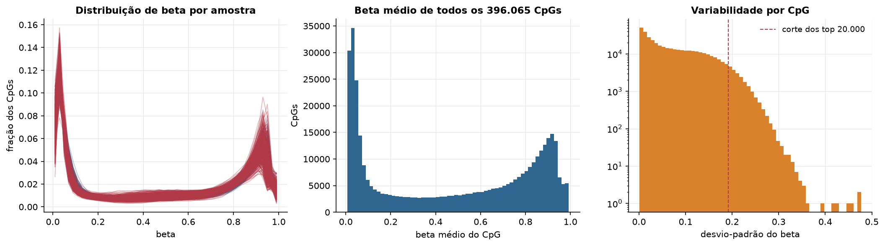
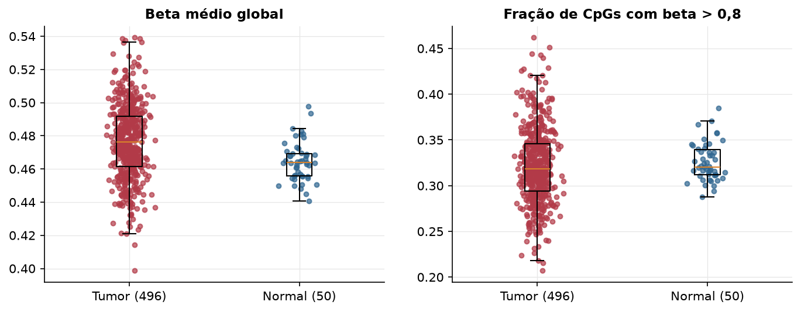
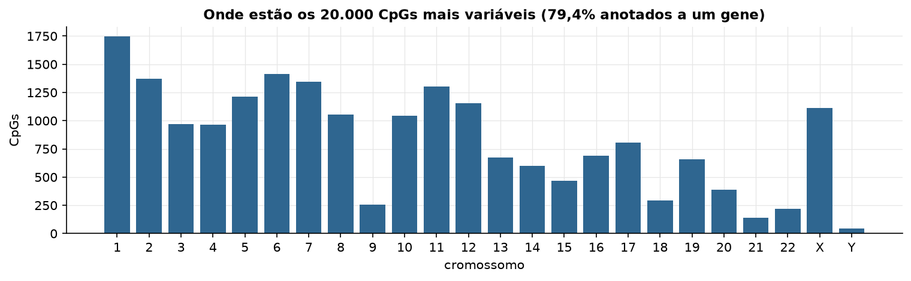
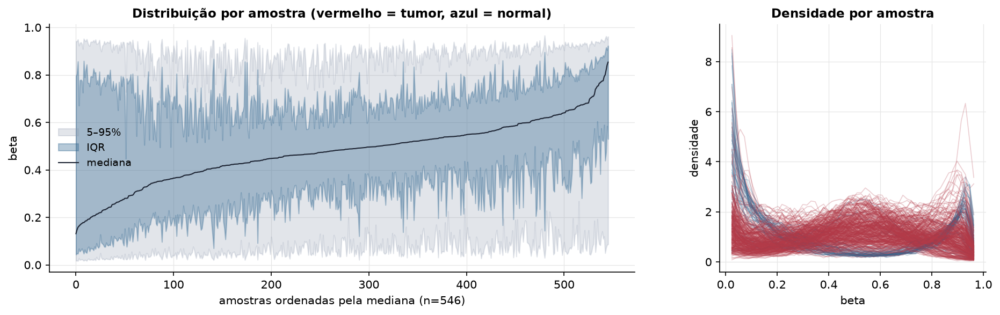
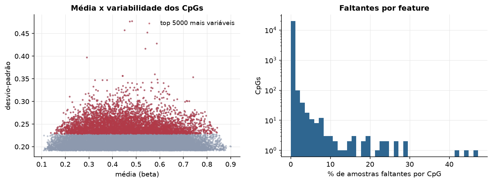
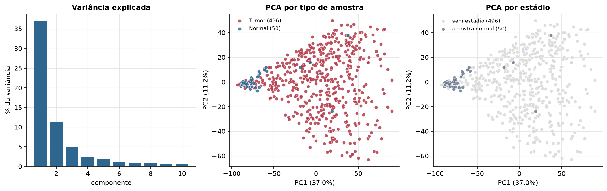
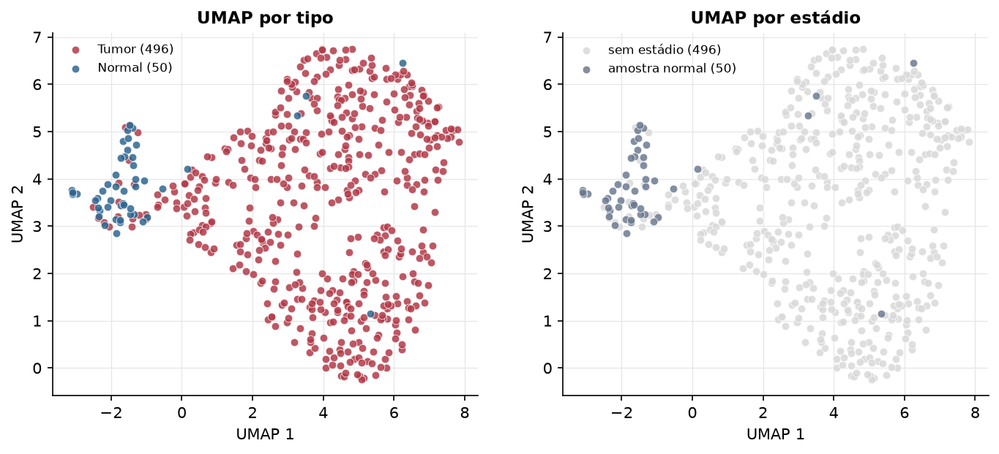
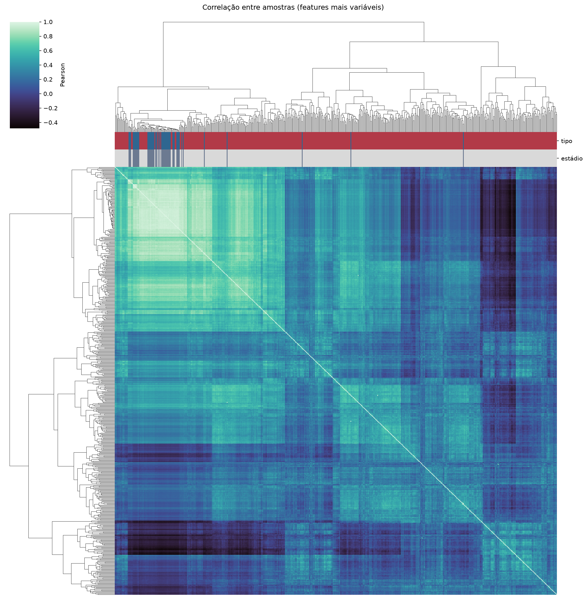
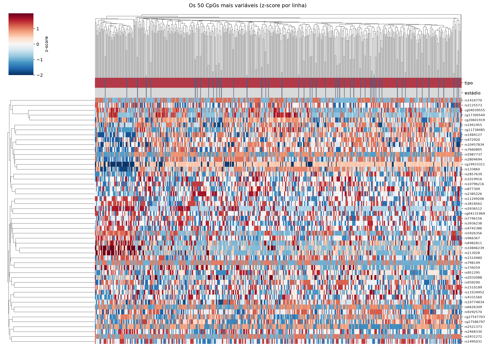
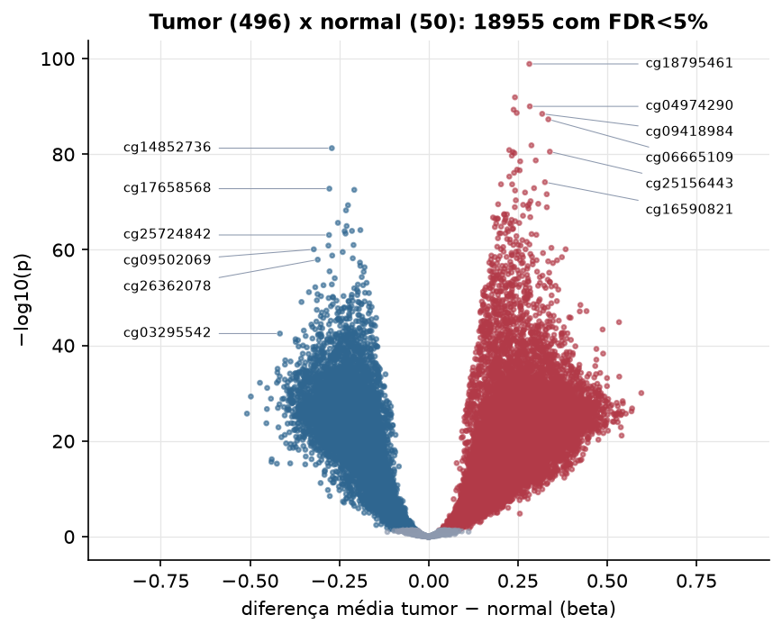

PRAD · Metilação do DNA (450k)
Illumina Infinium HumanMethylation450, valores beta (0 a 1) · gerado em 22/10/2026 03:19
396.065CpGs medidos
383.271CpGs sem faltante
20.000CpGs
496amostras tumorais
50amostras normais
0,1%valores faltantes
Fonte: PanCanAtlas HM450 via API do Xena
O array tem ~485 mil CpGs. Para não ocupar espaço, guardamos estatísticas de todos os CpGs e só os 20.000 mais variáveis para PCA, UMAP e heatmaps.
Principais resultados
- A distribuição de beta é bimodal: a maioria dos CpGs está quase toda desmetilada (perto de 0, típico de ilhas CpG em promotores) ou quase toda metilada (perto de 1, corpo gênico e regiões intergênicas). 34,6% dos CpGs têm beta médio intermediário (0,2 a 0,8).
- Beta médio global: 0,476 nos tumores e 0,464 nos normais (sem hipometilação global no tumor).
- 20.000 CpGs medidos em 546 amostras (496 tumorais e 50 normais); 0,1% dos valores estão faltando.
- Os dois primeiros componentes principais explicam 37,0% e 11,2% da variância das features mais variáveis.
- Correlação mediana entre amostras: 0,27.
- Tumor x normal: 18955 CpGs diferentes com FDR < 5% (12533 maiores no tumor, 6422 maiores no normal; 50 pacientes têm o par tumor-normal).
- Mais aumentados no tumor: cg18795461, cg09044785, cg04974290, cg10821050, cg17384056, cg09418984, cg06665109, cg15110403.
- Mais reduzidos no tumor: cg14852736, cg17658568, cg02725485, cg03018162, cg23817637, cg00592494, cg18590130, cg22491067.
- Associações clínicas com p < 0,05 nos componentes principais: PC1 com idade (p=0.00046); PC2 com idade (p=0.012); PC3 com idade (p=0.0033).
Distribuição global



Exploração dos CpGs mais variáveis
Distribuição dos valores


Estrutura das amostras




Tumor x normal

Features mais diferentes entre tumor e normal
| diferenca_tumor_menos_normal | t | p | fdr | |
|---|---|---|---|---|
| cg18795461 | 0.282 | 26.647 | 1.28e-99 | 2.55e-95 |
| cg09044785 | 0.242 | 25.192 | 1.24e-92 | 1.24e-88 |
| cg04974290 | 0.283 | 25.616 | 9.67e-91 | 6.45e-87 |
| cg10821050 | 0.238 | 24.601 | 4.81e-90 | 2.4e-86 |
| cg17384056 | 0.247 | 24.775 | 2.24e-89 | 8.96e-86 |
| cg09418984 | 0.318 | 24.56 | 3.52e-89 | 1.17e-85 |
| cg06665109 | 0.335 | 24.519 | 4.95e-88 | 1.41e-84 |
| cg15110403 | 0.288 | 25.755 | 1.38e-82 | 3.46e-79 |
| cg14852736 | -0.271 | -24.767 | 5.31e-82 | 1.18e-78 |
| cg08081805 | 0.226 | 22.93 | 1.35e-81 | 2.69e-78 |
| cg25156443 | 0.339 | 24.932 | 2.85e-81 | 5.19e-78 |
| cg18928737 | 0.236 | 22.886 | 3.38e-81 | 5.63e-78 |
| cg08407114 | 0.24 | 22.749 | 5.73e-81 | 8.82e-78 |
| cg27559870 | 0.233 | 23.567 | 1.95e-80 | 2.78e-77 |
| cg15820574 | 0.3 | 26.401 | 1.95e-79 | 2.61e-76 |
| cg16342439 | 0.256 | 23.963 | 3.05e-79 | 3.82e-76 |
| cg12009023 | 0.248 | 22.582 | 1.67e-77 | 1.96e-74 |
| cg14310703 | 0.255 | 22.354 | 2.36e-77 | 2.62e-74 |
| cg18959966 | 0.239 | 21.992 | 7.75e-77 | 8.16e-74 |
| cg02474799 | 0.226 | 21.773 | 4.66e-76 | 4.66e-73 |
| cg16590821 | 0.326 | 22.409 | 7e-75 | 6.67e-72 |
| cg18206017 | 0.203 | 21.574 | 1.91e-74 | 1.72e-71 |
| cg24983862 | 0.234 | 23.102 | 1.98e-74 | 1.72e-71 |
| cg09491410 | 0.295 | 23.824 | 1.24e-73 | 1.03e-70 |
| cg17658568 | -0.278 | -23.094 | 1.59e-73 | 1.27e-70 |
| cg02725485 | -0.208 | -21.612 | 2.83e-73 | 2.17e-70 |
| cg19098796 | 0.242 | 21.596 | 3.89e-73 | 2.88e-70 |
| cg10749912 | 0.27 | 22.954 | 1.01e-72 | 7.24e-70 |
| cg27559661 | 0.331 | 24.401 | 2.31e-72 | 1.6e-69 |
| cg19233043 | 0.244 | 20.877 | 4.29e-71 | 2.86e-68 |
Associação com variáveis clínicas
p-valores da associação dos três primeiros componentes principais (só tumores) com estádio (Kruskal-Wallis), sexo (Mann-Whitney), idade (Spearman) e sobrevida global (Cox univariado).
| estádio (Kruskal) | sexo (Mann-Whitney) | idade (Spearman) | sobrevida OS (Cox) | |
|---|---|---|---|---|
| PC1 (31,0%) | 0.000464 | 0.096 | ||
| PC2 (12,3%) | 0.012 | 0.704 | ||
| PC3 (5,3%) | 0.003 | 0.705 |